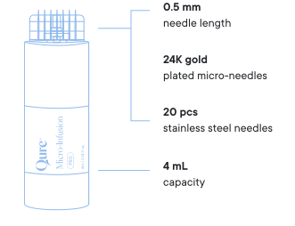
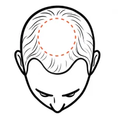
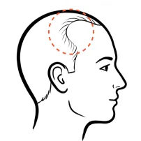
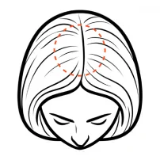
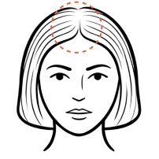
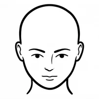
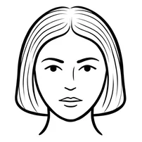

Micro-Infusion Pro Hair System User Guide
IMPORTANT NOTICE:
Please read this guideline carefully before proceeding with Micro-Infusion Pro treatment.
Your Qure™ Micro-Infusion Pro Hair System combines precision micro-stamping and targeted serum application in one ready-to-use device.
This guide will walk you through each step so you can perform your weekly scalp treatment safely and confidently.
We recommend performing your treatment at night. This allows the Micro-Infusion Hair Serum to remain on your scalp overnight and gives the scalp time to settle after treatment.
Numbing Cream
We do not recommend using numbing cream before or during Micro-Infusion Pro Hair.
If treatment feels uncomfortable, use lighter, gentler stamping motions and avoid excessive pressure.
Stop treatment if discomfort continues.
Mild redness, warmth, tingling or sensitivity may occur immediately after treatment and should gradually settle.
Once 24 hours have passed, gradually resume your normal hair and scalp routine provided the scalp feels comfortable.
Resume your regular gentle hair-care routine once the scalp feels comfortable.
Avoid harsh scalp exfoliation or anything that causes stinging, burning or irritation while the scalp is still sensitive.
For a complete Qure hair routine, pair your weekly Micro-Infusion Pro Hair treatment with:
Qure Hair Renewal Serum
Use nightly between weekly Micro-Infusion treatments. Apply a few drops and gently massage into the scalp.
Q-Renew LLLT Hair Growth Helmet
Use as directed as part of your regular hair-care routine. Use the helmet on a clean scalp before applying leave-on serums.
On your weekly Micro-Infusion day, the Q-Renew LLLT Hair Growth Helmet can be used before your Micro-Infusion Pro Hair treatment.
The Qure™ Micro-Infusion Pro Hair System features:
The system is designed to make scalp treatment simple and consistent while automatically dispensing serum during stamping.

Only use the Micro-Infusion Hair Serum supplied inside your Micro-Infusion Pro Hair device during treatment.
The serum is specifically formulated and tested for use with the system, including the correct consistency and viscosity to support serum flow, needle-head compatibility and overall device performance.
Do not add another serum or scalp product to the device.
Refer to your product packaging for the complete ingredient list.
Micro-Infusion Pro Hair is designed for treatment across the entire scalp.
Part the hair into sections and work systematically so the device can make direct contact with the scalp.

Crown thinning
Receding hairline
Scalp dryness
Hair shedding
Scalp dryness
Overall density
Do not stamp directly over:
Open wounds, Broken skin, Active scalp infections, Inflamed areas, Irritated areas
If an area feels particularly sensitive, use lighter pressure or avoid that area.
How often to use Micro-Infusion Pro:
Perform one Micro-Infusion Pro Hair treatment every week.
Do not perform more than one treatment within a 7-day period.
The Qure app supports your Micro-Infusion Pro routine by keeping everything simple.
It helps you track treatments and stay consistent over time, without needing to think about timing or schedules.
The Qure™ Micro-Infusion Pro Hair System is designed for personal at-home use only.
Discontinue treatment if significant irritation occurs and consult a medical professional if needed.
Keep out of reach of children.
This is normal and does not mean your device is faulty.
Micro-Infusion Pro Hair uses an airless pump system.
When you first begin treatment, it may take several presses for the pump to activate and for serum to reach the needle head.
Continue gently stamping until serum begins to dispense.
If serum flow appears slow, continue stamping gently.
Do not shake the device or press harder to force the serum out.
No.
The needle head and serum vial are already integrated into the device.
Simply remove the device from its sterile packaging, take off the protective cap and begin your treatment.
Perform one treatment every week.
Yes.
Start with a clean scalp that is free from oils, dry shampoo, styling products and other leave-on products.
Part your hair into sections to expose the scalp.
Hold the hair aside and stamp directly onto the exposed scalp, then create a new part and continue systematically across the entire scalp.
Micro-Infusion Pro Hair is designed to be used across the entire scalp.
Work section by section for even coverage.
Complete 2–3 stamping passes across the entire scalp.
Slightly overlap each stamp for even coverage.
After completing your 2–3 stamping passes, place the protective cap back onto the needle head and carefully unscrew it from the device.
Pour any remaining serum into clean hands and gently massage it into the scalp.
Leave on overnight.
No.
Each Micro-Infusion Pro Hair device is sterile and designed for single use only.
Never reuse the device or needle head.
No.
Only use the Micro-Infusion Hair Serum supplied inside the device during treatment.
The serum is specifically tested with the Micro-Infusion Pro Hair System for the correct consistency and viscosity, as well as serum flow, needle-head compatibility and overall device performance.
Other serums have not been tested with the system and may not flow or perform correctly with the device.
Wait at least 24 hours after treatment before washing your hair or scalp.
Hair Renewal Serum is a separate companion product designed to complement your weekly Micro-Infusion routine.
Use it nightly between Micro-Infusion treatments, once at least 24 hours have passed and your scalp feels comfortable.
Yes.
Use the Q-Renew LLLT Hair Growth Helmet as directed as part of your regular hair-care routine.
Use the helmet on a clean scalp before applying leave-on serums.
On your weekly Micro-Infusion day, the helmet can be used before your Micro-Infusion Pro Hair treatment.
No.
We do not recommend using numbing cream before or during Micro-Infusion Pro Hair.
Use gentle, controlled pressure throughout your treatment.
Temporary mild redness, warmth, tingling or sensitivity may occur after treatment and should gradually settle.
With consistent use over time, Micro-Infusion Pro Hair is designed to support:
Individual results may vary.